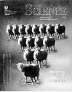

Copyright Notice
 "Clone me," says Dolly sheepishly.
Last update:
2-Jan-2017 11:58
UTC
The following copyright notice applies to all files collectively called the Network Time Protocol Version 4 Distribution. Unless specifically declared otherwise in an individual file, this entire notice applies as if the text was explicitly included in the file.
***********************************************************************
* *
* Copyright (c) University of Delaware 1992-2015 *
* *
* Permission to use, copy, modify, and distribute this software and *
* its documentation for any purpose with or without fee is hereby *
* granted, provided that the above copyright notice appears in all *
* copies and that both the copyright notice and this permission *
* notice appear in supporting documentation, and that the name *
* University of Delaware not be used in advertising or publicity *
* pertaining to distribution of the software without specific, *
* written prior permission. The University of Delaware makes no *
* representations about the suitability this software for any *
* purpose. It is provided "as is" without express or implied *
* warranty. *
* *
***********************************************************************
Content starting in 2011 from Harlan Stenn, Danny Mayer, and Martin Burnicki is:
***********************************************************************
* *
* Copyright (c) Network Time Foundation 2011-2017 *
* *
* All Rights Reserved *
* *
* Redistribution and use in source and binary forms, with or without *
* modification, are permitted provided that the following conditions *
* are met: *
* 1. Redistributions of source code must retain the above copyright *
* notice, this list of conditions and the following disclaimer. *
* 2. Redistributions in binary form must reproduce the above *
* copyright notice, this list of conditions and the following *
* disclaimer in the documentation and/or other materials provided *
* with the distribution. *
* *
* THIS SOFTWARE IS PROVIDED BY THE AUTHORS ``AS IS'' AND ANY EXPRESS *
* OR IMPLIED WARRANTIES, INCLUDING, BUT NOT LIMITED TO, THE IMPLIED *
* WARRANTIES OF MERCHANTABILITY AND FITNESS FOR A PARTICULAR PURPOSE *
* ARE DISCLAIMED. IN NO EVENT SHALL THE AUTHORS OR CONTRIBUTORS BE *
* LIABLE FOR ANY DIRECT, INDIRECT, INCIDENTAL, SPECIAL, EXEMPLARY, OR *
* CONSEQUENTIAL DAMAGES (INCLUDING, BUT NOT LIMITED TO, PROCUREMENT *
* OF SUBSTITUTE GOODS OR SERVICES; LOSS OF USE, DATA, OR PROFITS; OR *
* BUSINESS INTERRUPTION) HOWEVER CAUSED AND ON ANY THEORY OF *
* LIABILITY, WHETHER IN CONTRACT, STRICT LIABILITY, OR TORT *
* (INCLUDING NEGLIGENCE OR OTHERWISE) ARISING IN ANY WAY OUT OF THE *
* USE OF THIS SOFTWARE, EVEN IF ADVISED OF THE POSSIBILITY OF SUCH *
* DAMAGE. *
***********************************************************************
The following individuals contributed in part to the Network Time Protocol Distribution Version 4 and are acknowledged as authors of this work.
- Takao Abe <takao_abe@xurb.jp> Clock driver for JJY receivers
- Mark Andrews <mark_andrews@isc.org> Leitch atomic clock controller
- Bernd Altmeier <altmeier@atlsoft.de> hopf Elektronik serial line and PCI-bus devices
- Viraj Bais <vbais@mailman1.intel.com> and Clayton Kirkwood <kirkwood@striderfm.intel.com> port to WindowsNT 3.5
- Michael Barone <michael,barone@lmco.com> GPSVME fixes
- Karl Berry <karl@owl.HQ.ileaf.com> syslog to file option
- Greg Brackley <greg.brackley@bigfoot.com> Major rework of WINNT port. Clean up recvbuf and iosignal code into separate modules.
- Marc Brett <Marc.Brett@westgeo.com> Magnavox GPS clock driver
- Piete Brooks <Piete.Brooks@cl.cam.ac.uk> MSF clock driver, Trimble PARSE support
- Nelson B Bolyard <nelson@bolyard.me> update and complete broadcast and crypto features in sntp
- Jean-Francois Boudreault <Jean-Francois.Boudreault@viagenie.qc.ca> IPv6 support
- Reg Clemens <reg@dwf.com> Oncore driver (Current maintainer)
- Steve Clift <clift@ml.csiro.au> OMEGA clock driver
- Casey Crellin <casey@csc.co.za> vxWorks (Tornado) port and help with target configuration
- Sven Dietrich <sven_dietrich@trimble.com> Palisade reference clock driver, NT adj. residuals, integrated Greg's Winnt port.
- John A. Dundas III <dundas@salt.jpl.nasa.gov> Apple A/UX port
- Torsten Duwe <duwe@immd4.informatik.uni-erlangen.de> Linux port
- Dennis Ferguson <dennis@mrbill.canet.ca> foundation code for NTP Version 2 as specified in RFC-1119
- John Hay <jhay@icomtek.csir.co.za> IPv6 support and testing
- Dave Hart <davehart@davehart.com> General maintenance, Windows port interpolation rewrite
- Claas Hilbrecht <neoclock4x@linum.com> NeoClock4X clock driver
- Glenn Hollinger <glenn@herald.usask.ca> GOES clock driver
- Mike Iglesias <iglesias@uci.edu> DEC Alpha port
- Jim Jagielski <jim@jagubox.gsfc.nasa.gov> A/UX port
- Jeff Johnson <jbj@chatham.usdesign.com> massive prototyping overhaul
- Hans Lambermont <Hans.Lambermont@nl.origin-it.com> or <H.Lambermont@chello.nl> ntpsweep
- Poul-Henning Kamp <phk@FreeBSD.ORG> Oncore driver (Original author)
- Frank Kardel <kardel (at) ntp (dot) org> PARSE <GENERIC> (driver 14 reference clocks), STREAMS modules for PARSE, support scripts, syslog cleanup, dynamic interface handling
- Johannes Maximilian Kuehn <kuehn@ntp.org> Rewrote sntp to comply with NTPv4 specification, ntpq saveconfig
- William L. Jones <jones@hermes.chpc.utexas.edu> RS/6000 AIX modifications, HPUX modifications
- Dave Katz <dkatz@cisco.com> RS/6000 AIX port
- Craig Leres <leres@ee.lbl.gov> 4.4BSD port, ppsclock, Magnavox GPS clock driver
- George Lindholm <lindholm@ucs.ubc.ca> SunOS 5.1 port
- Louis A. Mamakos <louie@ni.umd.edu> MD5-based authentication
- Lars H. Mathiesen <thorinn@diku.dk> adaptation of foundation code for Version 3 as specified in RFC-1305
- Danny Mayer <mayer@ntp.org>Network I/O, Windows Port, Code Maintenance
- David L. Mills <mills@udel.edu> Version 4 foundation, precision kernel; clock drivers: 1, 3, 4, 6, 7, 11, 13, 18, 19, 22, 36
- Wolfgang Moeller <moeller@gwdgv1.dnet.gwdg.de> VMS port
- Jeffrey Mogul <mogul@pa.dec.com> ntptrace utility
- Tom Moore <tmoore@fievel.daytonoh.ncr.com> i386 svr4 port
- Kamal A Mostafa <kamal@whence.com> SCO OpenServer port
- Derek Mulcahy <derek@toybox.demon.co.uk> and Damon Hart-Davis <d@hd.org> ARCRON MSF clock driver
- Rob Neal <neal@ntp.org> Bancomm refclock and config/parse code maintenance
- Rainer Pruy <Rainer.Pruy@informatik.uni-erlangen.de> monitoring/trap scripts, statistics file handling
- Dirce Richards <dirce@zk3.dec.com> Digital UNIX V4.0 port
- Wilfredo Sánchez <wsanchez@apple.com> added support for NetInfo
- Nick Sayer <mrapple@quack.kfu.com> SunOS streams modules
- Jack Sasportas <jack@innovativeinternet.com> Saved a Lot of space on the stuff in the html/pic/ subdirectory
- Ray Schnitzler <schnitz@unipress.com> Unixware1 port
- Michael Shields <shields@tembel.org> USNO clock driver
- Jeff Steinman <jss@pebbles.jpl.nasa.gov> Datum PTS clock driver
- Harlan Stenn <harlan@pfcs.com> GNU automake/autoconfigure makeover, various other bits (see the ChangeLog)
- Kenneth Stone <ken@sdd.hp.com> HP-UX port
- Ajit Thyagarajan <ajit@ee.udel.edu>IP multicast/anycast support
- Tomoaki TSURUOKA <tsuruoka@nc.fukuoka-u.ac.jp>TRAK clock driver
- Brian Utterback <brian.utterback@oracle.com> General codebase, Solaris issues
- Loganaden Velvindron <loganaden@gmail.com> Sandboxing (libseccomp) support
- Paul A Vixie <vixie@vix.com> TrueTime GPS driver, generic TrueTime clock driver
- Ulrich Windl <Ulrich.Windl@rz.uni-regensburg.de> corrected and validated HTML documents according to the HTML DTD